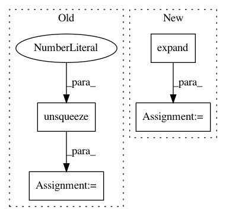

91b0d220c8e816766fd4565e1d2f5115d3afbefe,gpytorch/lazy/lazy_tensor.py,LazyTensor,evaluate,#LazyTensor#,408
Before Change
else:
eye = torch.eye(num_cols, dtype=self.dtype, device=self.device)
if batch_mode:
eye = eye.unsqueeze(0).expand(batch_size, num_cols, num_cols)
return self.matmul(eye)
def evaluate_kernel(self):
After Change
return self.transpose(-1, -2).matmul(eye).transpose(-1, -2).contiguous()
else:
eye = torch.eye(num_cols, dtype=self.dtype, device=self.device)
eye = eye.expand(*self.batch_shape, num_cols, num_cols)
return self.matmul(eye)
def evaluate_kernel(self):
In pattern: SUPERPATTERN
Frequency: 4
Non-data size: 4
Instances
Project Name: cornellius-gp/gpytorch
Commit Name: 91b0d220c8e816766fd4565e1d2f5115d3afbefe
Time: 2018-10-12
Author: gpleiss@gmail.com
File Name: gpytorch/lazy/lazy_tensor.py
Class Name: LazyTensor
Method Name: evaluate
Project Name: cornellius-gp/gpytorch
Commit Name: 23973f45c189d3cbe34645350cd4f670f7999272
Time: 2019-03-18
Author: gpleiss@gmail.com
File Name: gpytorch/lazy/cat_lazy_tensor.py
Class Name: CatLazyTensor
Method Name: _matmul
Project Name: interactiveaudiolab/nussl
Commit Name: a9897443682f7c0d7b894f8518ce37b8df950894
Time: 2020-01-30
Author: prem@u.northwestern.edu
File Name: nussl/deep/networks/clustering/gmm.py
Class Name: GMM
Method Name: update_likelihoods
Project Name: cornellius-gp/gpytorch
Commit Name: cea478600970228f6b8dd12b067facde3d5d261f
Time: 2019-05-08
Author: balandat@fb.com
File Name: gpytorch/models/exact_gp.py
Class Name: ExactGP
Method Name: get_fantasy_model